학습 목표와 전체 흐름
내가 만든 전자책 그림책을 POD(주문이 들어오면 한 권씩 찍어 주는 종이책)로 내기 전에, 어느 길로 갈지와 어떤 판형으로 갈지를 정합니다.
알아보기 읽고 이해하는 구역
오늘의 학습 목표
- 내가 직접 조사한 부크크와 교보문고 바로출판의 최소 쪽수와 판형(책의 크기와 모양)을 공식 정보와 맞춰 볼 수 있다.
- 내 동화책과 계획서를 AI에 넣고, 종이책으로 바꾸는 데 필요한 것을 내 말로 물어볼 수 있다.
- 판정 프롬프트(AI에게 주는 지시문)로 「A 보강」과 「B 새로 만들기」 판정을 받고, 내 길을 이유와 함께 정할 수 있다.
- 판형에 따라 그림의 뷰·샷·앵글이 달라지는 것을 이해하고, 내 책의 판형을 이유와 함께 정할 수 있다.
- 두 곳의 파일 규격(재단 여백, 오른쪽 시작, 표지 구성)으로 내 책을 점검할 수 있다.
전체 흐름
처음부터 완성된 프롬프트를 받지 않고, 먼저 스스로 찾고 스스로 물어봅니다. 그래야 다른 책을 만들 때도 혼자 할 수 있습니다. 판정을 받은 뒤에 판형을 고민하는 까닭은, 판형이 그림의 구도를 정하기 때문입니다.
해 보기 직접 따라 하는 구역
1준비물 확인하기
- 완성해서 올린 내 전자책 그림책 PDF
- 전자책을 만들 때의 계획서 (제미나이와 나눈 대화창을 그대로 이어서 써도 됩니다)
- 장면마다 확정한 최종 글
- 부크크 계정, 교보문고 파트너시스템 계정
- 패들렛에 올린 내 「POD 출판 정보 조사 보고서」
2패들렛에 올릴 세 가지
패들렛에는 모두 세 가지를 올립니다.
| 순서 | 제목 | 올리는 때 |
|---|---|---|
| ① | POD 출판 정보 조사 보고서 | 이미 올렸습니다 |
| ② | POD 분석 보고서 · 보강/새로 제작 | STEP 3을 마치고 |
| ③ | POD 판형 계획서 | STEP 8을 마치고 |
조사 보고서 점검하기
종이책은 출판하는 곳마다 조건이 다릅니다. 이미 직접 조사해서 패들렛에 올린 보고서를 꺼내, 빠진 것이 없는지 확인합니다.
알아보기 읽고 이해하는 구역
종이책은 이렇게 생겼습니다
최소 쪽수는 내지(책 속 종이)의 쪽수를 말합니다. 표지와 면지(표지 안쪽의 빈 종이)는 세지 않습니다. 내지 1쪽은 책을 펼쳤을 때 오른쪽에 놓입니다.
내 책의 내지 쪽수 계산하기
부속은 본문 앞뒤에 붙는 쪽입니다(속표지, 판권 쪽, 작가의 말 등). 그림이 늘 왼쪽(짝수 쪽)에 오게 하려면 앞부속은 홀수 쪽으로 맞춥니다. 전자책은 부속이 적었지만, 종이책은 앞뒤 부속을 5쪽 안팎으로 잡고 계산합니다. STEP 3의 판정 프롬프트도 이 기준으로 계산합니다.
어디서 찾나
| 곳 | 보는 화면 |
|---|---|
| 부크크 | bookk.co.kr → 책만들기 → 종이책. 판형·표지·날개 선택 칸과 그 아래 안내 글, 「원고서식 받기」로 받는 서식 파일, 고객센터의 자주 묻는 질문 |
| 교보문고 | 파트너시스템에 로그인 → 바로출판POD관리 → POD등록. Step1 준비하기, Step2 책형태정하기, Step3 원고등록하기 화면을 끝까지 내려 봅니다. 바로출판 자주 묻는 질문과 공지사항도 봅니다. |
(공)과 (남)으로 출처 나누기
블로그 글이나 AI의 답은 서로 다른 숫자를 말할 때가 많습니다.
- (공) 공식 화면·공지에서 직접 본 것
- (남) 블로그·AI 답변 등 남의 글에서 본 것
무선 제본은 책등을 풀로 붙이는 일반 책, 양장은 두꺼운 표지의 책, 재단 여백은 인쇄한 뒤 잘려 나가는 가장자리입니다.
해 보기 직접 따라 하는 구역
1내 조사 보고서를 10항목으로 점검하기
패들렛에 올린 내 조사 보고서를 옆에 펴 둡니다. 아래 10항목 가운데 보고서에 이미 있는 것은 옮겨 적고, 빠진 것만 새로 찾습니다. 숫자만 적지 말고 어디서 찾았는지도 함께 적습니다.
| 항목 | 부크크 | 교보문고 바로출판 | 어디서 찾았나 |
|---|---|---|---|
| 1. 종이책 최소 쪽수 | |||
| 2. 종이책 최대 쪽수 | |||
| 3. 쪽수 조건(짝수, 4의 배수 등)이 있는가 | |||
| 4. 고를 수 있는 판형 수 | |||
| 5. 가로형·정사각형 판형이 있는가 | |||
| 6. 내 그림책에 맞을 판형과 크기(mm) | |||
| 7. 제본 종류(무선·날개·양장) | |||
| 8. 원고 파일 형식과 용량 | |||
| 9. 재단 여백(사방 몇 mm) | |||
| 10. AI로 만든 책이라는 표시를 해야 하는가 |
2AI에게도 물어보고 비교하기
같은 것을 AI에게 물어보고, 내가 공식 화면에서 찾은 숫자와 같은지 봅니다. 다르면 조사표에 (남)으로 따로 적어 둡니다.
부크크 종이책과 교보문고 바로출판(POD)의 최소 쪽수를 알려 줘. - 각각 공식 화면이나 공지의 주소를 함께 적어 줘. - 주소를 모르면 "출처 모름"이라고 적어 줘. 짐작해서 채우지 마. - 두 곳의 숫자가 다르면 어디가 다른지 표로 보여 줘.
직접 물어보기
이번에는 완성된 프롬프트 없이 AI에게 내 말로 물어봅니다. 무엇을 물을지만 정해 두었습니다.
알아보기 읽고 이해하는 구역
종이책으로 가는 두 갈래 길
쪽수가 모자라는 책을 종이책으로 만드는 길은 둘입니다. 어느 길이 맞는지는 책마다 다릅니다. 그래서 먼저 내 책이 어떤 책인지 AI와 함께 살펴봅니다.
질문을 잘하는 네 가지
- 조건은 숫자로 알려 줍니다. "쪽수가 모자라"보다 "내지 ○쪽 이상이어야 해"가 낫습니다. 조사표의 숫자를 씁니다.
- 한 번에 하나씩 묻습니다.
- 근거를 달라고 합니다. "내 자료의 어느 부분을 보고 그렇게 말했는지 알려 줘."
- 모르면 모른다고 하게 합니다. "자료에 없으면 없다고 말해 줘. 지어내지 마."
AI에 넣을 자료 세 가지
| 자료 | 설명 |
|---|---|
| ① 내 동화책 | 완성해서 올린 전자책 PDF |
| ② 계획서 | 전자책을 만들 때의 기획 자료. 제미나이와 나눈 대화창을 그대로 이어서 써도 됩니다. |
| ③ 최종 글 | 장면마다 확정한 글. PDF 속 글자가 그림으로 들어가 있으면 AI가 글을 놓칠 수 있어서 따로 붙여 넣습니다. |
해 보기 직접 따라 하는 구역
1자료를 넣고 첫 마디 건네기
자료 세 가지를 넣고, 이 한 줄로 시작합니다. 그다음부터는 내 말로 이어 갑니다.
첨부한 것은 내가 만든 전자책 그림책과 그 계획서야. 이 책을 종이책으로 내려고 해. 먼저 이 책이 몇 장면, 몇 쪽인지 말해 줘.
2물어볼 거리 여섯 가지
아래를 내 말로 바꿔 하나씩 물어봅니다. 문장은 일부러 적어 두지 않았습니다.
| 물어볼 거리 | 왜 물어보나 |
|---|---|
| 내 책은 지금 몇 장면, 몇 쪽인가 | AI가 내 책을 제대로 읽었는지 확인 |
| 내가 조사한 최소 쪽수에 맞추려면 몇 쪽이 모자라는가 | 늘려야 할 양을 숫자로 알기 |
| 지금 이야기에서 늘릴 수 있는 장면은 어디인가 | 보강이 되는 책인지 가늠 |
| 늘리면 어색해지거나 같은 그림이 반복될 곳은 어디인가 | 보강의 한계 알기 |
| 새로 만든다면 지금 책에서 무엇을 가져갈 수 있는가 | 새로 만들기의 모습 미리 보기 |
| 판형이 바뀌면 지금 그림은 어떻게 되는가 | 그림을 다시 그려야 하는지 알기 |
3돌아보기
- AI가 잘 답한 질문 하나와, 엉뚱하게 답한 질문 하나를 고릅니다.
- 엉뚱한 답이 나온 까닭을 한 줄로 적습니다. 내가 빠뜨린 정보가 있었는지 봅니다.
- STEP 3의 프롬프트를 볼 때, 내 질문에 없던 것이 무엇인지 찾아봅니다.
판정 받기
STEP 2에서 내 말로 물어봤다면, 이제 같은 일을 한 번에 시키는 프롬프트를 씁니다. 내 질문과 무엇이 다른지 비교하며 읽으세요.
알아보기 읽고 이해하는 구역
판정 프롬프트는 이렇게 짜여 있습니다
이 프롬프트에는 역할(그림책 편집자), 넣은 자료, 할 일과 하지 말 일, 판정하는 방법, 지킬 것, 출력 순서가 들어 있습니다. STEP 2의 내 질문에 빠져 있던 것이 무엇인지 표시해 보세요.
나온 결과 읽는 법
| 출력 | 무엇인가 | 내가 확인할 것 |
|---|---|---|
| 1 판정 | A 보강 / A 보강(조건부) / B 새로 만들기와 이유 세 줄 | 이유가 내 책 이야기인지, 어느 책에나 할 수 있는 말인지 |
| 2 판정 근거표 | 여섯 기준으로 본 내 책의 상태 | "남은 재료"가 내가 실제로 말한 것인지 |
| 3 쪽수 계산 | 모자라는 쪽수와 채우는 조합 | 덧셈을 직접 해 보기 |
| 4 미리 보기 | A면 보강 지도와 추가 질문, B면 모티브와 방향 3가지 | 보탤 장면이 자료에서 나온 것인지 |
| 5 반대쪽으로 가면 | 판정과 다르게 갈 때의 문제 | 내가 감당할 수 있는 문제인지 |
| 6 마무리 | 어느 쪽으로 갈지 묻는 질문 | 내 선택을 답하기 |
길면 "계속"이라고 입력해 끝까지 받습니다.
판정에 따라 이렇게 합니다
| 판정 | 할 일 |
|---|---|
| A 보강 | 추가 질문 5개에 답할 수 있는지 봅니다. 답할 기억이 있으면 A로 갑니다. 떠오르는 것이 없으면 B도 생각해 봅니다. |
| A 보강(조건부) | 추가 질문에 먼저 답해 봅니다. 장면이 채워지면 A, 채워지지 않으면 B입니다. |
| B 새로 만들기 | 방향 3가지 가운데 마음이 가는 것이 있는지 봅니다. 지금 이야기를 꼭 지키고 싶다면 출력 5를 읽고 A로 갈 수도 있습니다. |
해 보기 직접 따라 하는 구역
1쪽수 칸을 확인하기
첫머리의 【50】은 목표 내지 쪽수입니다. 부크크는 50쪽부터이고 교보문고도 50쪽 이상을 권하므로 50으로 둡니다. 쪽수는 짝수로 맞춥니다(홀수면 마지막 장 뒷면이 빕니다). 나머지 【 】는 넣은 자료를 가리키는 자리입니다.
2판정 프롬프트 붙여 넣기
자료 세 가지를 넣고 아래 프롬프트를 붙여 넣으면, 맨 첫 줄에 판정부터 나옵니다.
너는 그림책 편집자야. 내가 만든 전자책 그림책을 종이책(POD)으로 낼 거야. 종이책은 내지가 【50】쪽 이상이고 짝수여야 해서, 지금 분량으로는 모자라. [넣은 자료] ① 전자책을 만들 때의 기획 자료: 【이 대화의 앞부분 / 첨부 파일】 ② 전자책 PDF: 【첨부】 ③ 확정한 최종 글(장면별): 【붙여 넣기 — PDF 속 글자가 그림으로 들어가 있으면 꼭 넣기】 [네가 할 일] 아래 둘 가운데 어느 쪽이 맞는지 네가 먼저 판정해 줘. A 보강: 지금 이야기는 그대로 두고, 사이사이에 장면을 보태서 늘린다. B 새로 만들기: 지금 이야기에서 모티브(소재와 마음)만 가져와 새 이야기로 다시 만든다. 오늘은 판정만 해. 글을 고치거나 새로 쓰지 마. [판정하는 방법] 1. 필요한 장면 수를 계산해. 책은 왼쪽 쪽에 그림, 오른쪽 쪽에 글이 들어가. 내지 쪽수 = 앞부속(홀수 쪽) + 장면 수 × 2 + 글 없는 펼침 그림 수 × 2 + 뒷부속(홀수 쪽) (내지 1쪽은 오른쪽 쪽이고, 표지는 내지에 넣지 않아. 앞부속 5쪽, 뒷부속 5~7쪽을 기준으로 계산해.) 2. 지금 자료만으로 세울 수 있는 장면 수를 세어 봐. 세울 수 있는 것은 세 가지뿐이야. - 한 장면에 뭉쳐 있는 일을 2~3박자로 나누기 - 기획 자료에 있지만 책에서는 한 줄로 지나간 소리 · 냄새 · 생김새를 한 장면으로 세우기 - 기획 자료에 있는데 책에 안 쓰인 재료 실제 기억으로 쓴 책이면 자료에 없는 사건은 세지 마. 3. 아래 기준으로 판정해. - 가능한 장면 수가 필요한 장면 수 이상이면 → A 보강 - 필요한 장면 수의 70% 이상이고, 내가 질문에 답하면 채울 수 있어 보이면 → A 보강(조건부) - 70%에 못 미치거나, 늘리면 같은 그림이 반복될 수밖에 없으면 → B 새로 만들기 [끝까지 지킬 것] - 자료에 없는 사건 · 사람 · 말을 지어내지 마. 못 찾은 것은 "자료에 없음"이라고 적어. - (중략) · (생략)을 쓰지 마. 길면 "이번 출력 범위"를 적고 끝까지 쓴 뒤 "계속"을 안내해. - 아래 출력 순서를 바꾸지 마. 판정이 반드시 맨 위에 와야 해. [출력 1 — 판정] 첫 줄에 한 줄로만 적어: "판정: A 보강" / "판정: A 보강(조건부)" / "판정: B 새로 만들기" 바로 아래에 이유 세 줄. [출력 2 — 판정 근거표] 표: 기준 | 내 책의 상태 | 어느 쪽에 유리(A · B · 중립) ① 책의 종류 (실제 기억 · 창작 · 섞임) ② 사건이 하나인지 여럿인지 ③ 기획 자료에 남아 있는 재료의 양 ④ 쪼갤 수 있는 장면의 수 ⑤ 늘렸을 때 같은 그림이 반복될 위험 ⑥ 필요한 장면 수와 가능한 장면 수 (숫자로) [출력 3 — 쪽수 계산] 지금 장면 수와 내지 쪽수 / 모자라는 쪽수 / 목표를 채우는 조합 2가지(앞부속 · 장면 수 · 펼침 그림 수 · 뒷부속)를 표로. 조합마다 합계가 짝수인지 확인해. [출력 4 — 판정에 따른 미리 보기] - 판정이 A면: 보강 지도를 표로 — 기존 장면 | 무엇을 보탤지 | 근거가 되는 자료 | 늘어나는 장면 수. 그 아래에 나에게 물어볼 추가 질문 5개. - 판정이 B면: 가져갈 모티브 4가지(소재 · 정서 · 인물 관계 · 구조)와, 새 이야기 방향 3가지를 한 줄씩. 하나는 다른 실제 기억, 하나는 창작 이야기, 하나는 같은 이야기를 다른 사람의 눈으로. - 판정이 A(조건부)면: 둘 다 짧게. [출력 5 — 반대쪽으로 가면] 내가 판정과 반대로 가기로 했을 때 생길 문제를 두 줄로. [출력 6 — 마무리] 마지막 줄에 이렇게 물어봐: "이 판정대로 갈까요, 다른 쪽으로 갈까요?"
3분석 보고서를 만들어 패들렛에 올리기
AI가 준 결과를 그대로 붙이지 않고, 내가 확인한 내용으로 보고서를 만듭니다. 양식은 자유입니다.
| 넣을 것 | 내용 |
|---|---|
| 내 전자책 분석 | 지금 장면 수와 내지 쪽수, 목표 쪽수까지 모자라는 쪽수 |
| 판정과 이유 | A 보강 / A 보강(조건부) / B 새로 만들기, 이유 세 줄 |
| 판정 근거표 | 여섯 기준으로 본 내 책의 상태 |
| 쪽수 계산 | 목표를 채우는 조합(앞부속·장면 수·펼침 그림 수·뒷부속) |
| 내 선택 | "저는 A(또는 B)로 갑니다. 이유는 ○○입니다." AI의 판정과 다르면 그 까닭 |
| 질문 돌아보기 | STEP 2에서 잘 통한 질문 하나, 안 통한 질문 하나 |
게시물 제목: POD 분석 보고서 · 보강/새로 제작
쪽수 정보
길을 정했으면 이제 두 곳의 조건을 확인합니다. 먼저 쪽수입니다. 내가 올린 조사 보고서와 맞춰 봅니다.
알아보기 읽고 이해하는 구역
최소 쪽수 한눈에 보기
| 곳 | 최소 쪽수 | 근거 |
|---|---|---|
| 부크크 | 50쪽 | 책 만들기 화면의 안내 문구 "50페이지 미만은 도서출판 불가능합니다" |
| 교보문고 | 30쪽 (50쪽 이상 권장) | 파트너시스템 POD등록 화면, 바로출판 자주 묻는 질문, 검수 체크리스트 |
교보문고: 30쪽부터 등록됩니다
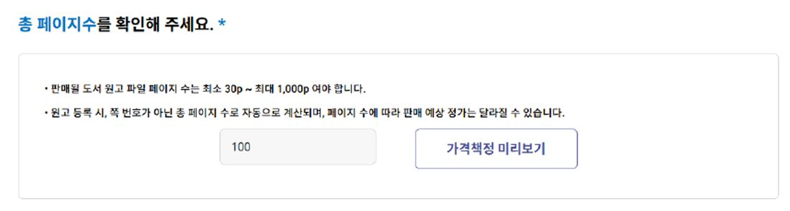
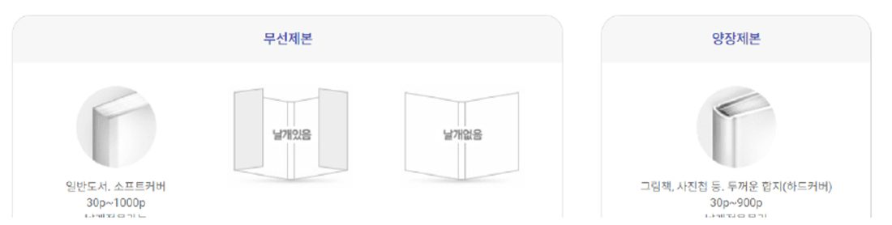
교보문고에서 30~49쪽으로 낼 때
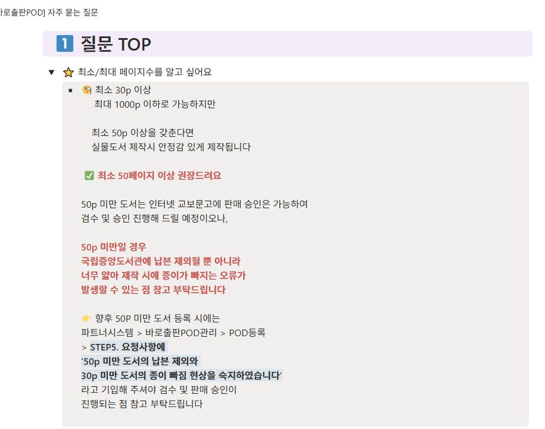
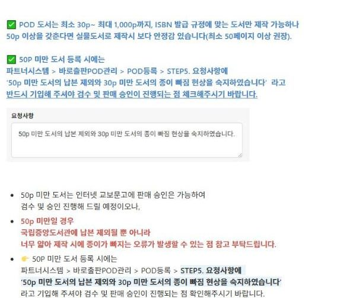
- 30쪽부터 등록은 되지만, 실물 책이 안정감 있게 만들어지려면 50쪽 이상을 권장합니다.
- 50쪽이 안 되는 책은 판매 승인은 되지만 국립중앙도서관 납본에서 빠지고, 너무 얇아 제작할 때 종이가 빠지는 오류가 생길 수 있습니다.
- 50쪽 미만으로 등록하려면 POD등록 STEP5 요청사항에 「50p 미만 도서의 납본 제외와 30p 미만 도서의 종이 빠짐 현상을 숙지하였습니다」라고 적어야 검수와 판매 승인이 진행됩니다.
해 보기 직접 따라 하는 구역
1내 조사 보고서의 쪽수 맞춰 보기
- 내 조사 보고서의 최소 쪽수, 최대 쪽수, 쪽수 조건을 위 표와 비교합니다.
- 맞으면 ○, 다르면 고친 값을 옆에 적습니다.
- 다른 칸은 어디서 찾았는지 다시 봅니다. (남)에서 가져온 값이었는지 확인합니다.
- 내 조사 결과가 위 표와 다르고 출처가 (공)이라면, 어디서 찾았는지 함께 이야기해 봅니다. 화면은 바뀔 수 있습니다.
2내 책에 모자라는 쪽수 계산시키기
【 】 안을 바꿔서 보내고, 덧셈은 직접 한 번 더 해 봅니다.
내 책은 지금 내지 【현재 쪽수】쪽이야. 부크크는 내지 50쪽 이상이어야 하고, 교보문고 바로출판은 30쪽부터 되지만 50쪽 이상을 권장해. 1. 두 곳에 각각 내려면 몇 쪽이 모자라는지 계산해 줘. 2. 50쪽을 채우려면 장면(한 장면 = 그림 한 쪽 + 글 한 쪽)이 몇 개 더 필요한지 알려 줘. 3. 합계가 짝수인지 확인해 줘. 계산 과정을 한 줄씩 보여 줘.
판형 정보
쪽수 다음은 판형입니다. 두 곳에서 고를 수 있는 판형을 모두 확인하고, 내 조사 보고서와 맞춰 봅니다.
알아보기 읽고 이해하는 구역
판형 크기 한눈에 보기
부크크 종이책 판형 4가지
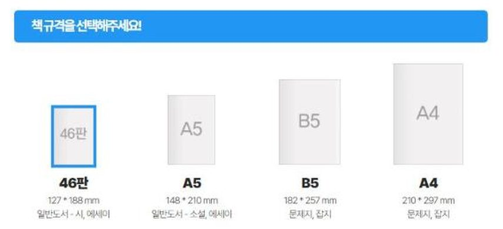

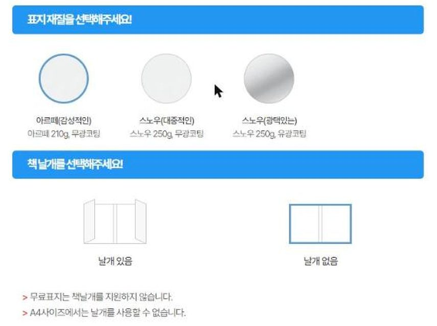
| 판형 | 크기(mm) | 부크크가 권하는 책 | 원고 서식의 문서 크기(mm) | 지금 그림(3:4)을 꽉 채우면 |
|---|---|---|---|---|
| 46판 | 127 × 188 | 시, 에세이 | 133 × 194 | 좌우 약 10% 잘림 |
| A5 | 148 × 210 | 소설, 에세이 | 154 × 216 | 좌우 약 6% 잘림 |
| B5 | 182 × 257 | 문제집, 잡지 | 188 × 263 | 좌우 약 6% 잘림 |
| A4 | 210 × 297 | 문제집, 잡지 | 216 × 303 | 좌우 약 6% 잘림 |
- 무선 제본(풀로 붙이는 일반 책)이고, 판형은 모두 세로형입니다.
- 문서 크기가 판형보다 사방 3mm씩 큽니다. 그림을 쪽 끝까지 채우려면 이 크기로 만듭니다.
- 책날개는 있음·없음을 고릅니다. 무료 표지는 책날개가 안 되고, A4는 책날개를 쓸 수 없습니다.
- 책 두께와 가격은 쪽수를 넣으면 화면이 계산해 줍니다.
교보문고 바로출판 판형 10가지
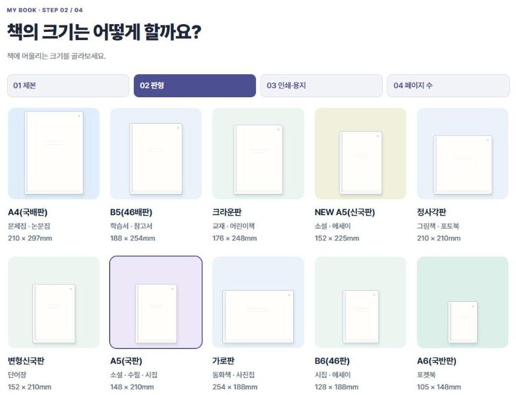
| 판형 | 크기(mm) | 모양 | 교보가 권하는 책 | 지금 그림(3:4)을 꽉 채우면 |
|---|---|---|---|---|
| 정사각판 | 210 × 210 | 정사각형 | 그림책, 포토북, 아트북 | 위아래 약 25% 잘림 → 다시 그리기 |
| 가로판 | 254 × 188 | 가로형 | 동화책, 교재, 사진집 | 위아래 약 45% 잘림 → 다시 그리기 |
| 크라운판 | 176 × 248 | 세로형 | 교재, 어린이 | 좌우 약 5% 잘림 |
| B5(46배판) | 188 × 254 | 세로형 | 학습, 참고서 | 좌우 약 1% 잘림 |
| 변형신국판 | 152 × 210 | 세로형 | 단어장 | 좌우 약 4% 잘림 |
| A5(국판) | 148 × 210 | 세로형 | 소설, 수필, 시집 | 좌우 약 6% 잘림 |
| A4(국배판) | 210 × 297 | 세로형 | 문제집, 논문집 | 좌우 약 6% 잘림 |
| NEW A5(신국판) | 152 × 225 | 세로형 | 소설, 에세이 | 좌우 약 10% 잘림 |
| B6(46판) | 128 × 188 | 세로형 | 시집, 에세이 | 좌우 약 9% 잘림 |
| A6(국반판) | 105 × 148 | 세로형 | 포켓북 | 좌우 약 5% 잘림 |
잘리는 양은 판형 크기로 어림한 값입니다. 같은 B5라도 부크크(182 × 257)와 교보문고(188 × 254)는 크기가 다릅니다.
두 곳 비교표
| 항목 | 부크크 | 교보문고 바로출판 |
|---|---|---|
| 판형 | 4가지, 모두 세로형 | 10가지, 정사각형·가로형 있음 |
| 제본 | 무선 (양장은 500부 이상일 때 따로 문의) | 무선 10개 판형, 날개 7개 판형, 양장 9개 판형. 양장은 무선보다 3배 넘게 비쌈 |
| 쪽수 | 50쪽 이상 | 30쪽~1,000쪽 (양장은 30쪽~900쪽), 50쪽 이상 권장 |
| 4의 배수 조건 | 공식 화면·안내에서 찾지 못함 | 공식 화면·공지에서 찾지 못함 |
| 원고 파일 | 한글, 워드, PDF | PDF만, 200MB 이하. 한 쪽씩 만든 파일 |
| 재단 여백 | 사방 3mm (원고 서식의 문서 크기) | 사방 3mm |
| 첫 쪽 | – | PDF 첫 쪽이 책의 오른쪽에 놓임 |
| 내지 종이 | 미색모조 100g (흑백 화면 기준) | 7가지. 컬러에는 스노우 100g·백색모조 100g, 그림책에는 백색모조 150g이 맞다고 적혀 있음 |
| 표지 종이 | 아르떼 210g 무광, 스노우 250g 무광, 스노우 250g 유광 | 등록 화면에서 4가지 가운데 선택 |
| AI 표시 | – | 원고나 표지에 AI를 일부라도 썼으면 「AI 생성·활용 도서」를 꼭 선택 |
| ISBN | 부크크에서 무료 등록 | 교보가 무료로 대신 발급. 다른 곳에서 낸 책도 새 ISBN이 필요 |
해 보기 직접 따라 하는 구역
1내 조사표와 맞춰 보기
- 내 조사 보고서의 판형, 제본, 원고 파일, 재단 여백, AI 표시 내용을 위 표와 하나씩 비교합니다.
- 맞은 칸에는 ○, 다른 칸에는 고친 값을 옆에 적습니다.
- 다른 칸은 내가 어디서 찾았는지 다시 봅니다. (남)에서 가져온 값이었는지 확인합니다.
- 내 조사 결과가 위 표와 다르고 출처가 (공)이라면, 어디서 찾았는지 함께 이야기해 봅니다. 화면은 바뀔 수 있습니다.
2AI에게 비교시키기
내 조사 보고서 내용을 붙여 넣고 보냅니다.
아래는 내가 직접 조사한 표와, 수업에서 받은 공식 정보야. 둘을 비교해 줘. [내 조사표] 【채운 조사표를 붙여 넣기】 [공식 정보] - 부크크: 최소 50쪽, 판형 4가지(46판 127×188, A5 148×210, B5 182×257, A4 210×297), 무선 제본, 재단 여백 사방 3mm - 교보문고 바로출판: 최소 30쪽(50쪽 이상 권장), 최대 1,000쪽(양장 900쪽), 판형 10가지(정사각판 210×210, 가로판 254×188 포함), PDF만 200MB 이하, 재단 여백 사방 3mm, AI 활용 도서 표시 필수 [네가 할 일] 1. 내 조사표에서 공식 정보와 다른 칸을 표로 보여 줘: 항목 | 내가 적은 것 | 공식 정보 | 왜 달랐을지 2. 내 책(내지 【현재 쪽수】쪽)이 두 곳에 각각 내려면 몇 쪽이 모자라는지 계산해 줘. 3. 내 조사표에 비어 있는 칸이 있으면 어디서 찾으면 되는지 알려 줘. [지킬 것] - 공식 정보에 없는 숫자는 지어내지 마. - 쉬운 말로, 표를 중심으로 답해 줘.
판형 고민하기
판형(책의 크기와 모양)이 바뀌면 그림을 잡는 방법이 달라집니다. 그림을 다시 만들기 전에 판형부터 정합니다.
알아보기 읽고 이해하는 구역
판형 모양에 따라 같은 장면이 이렇게 달라집니다
| 모양 | 잘 맞는 그림 | 조심할 그림 | 새 그림 비율 |
|---|---|---|---|
| 세로형 | 서 있는 인물, 얼굴 클로즈업, 위아래로 긴 것 | 넓은 풍경을 멀리서 잡은 그림은 좁아 보임 | 3:4 |
| 정사각 | 한 대상에 집중, 사물 클로즈업, 마주 보는 두 얼굴 | 위아래나 좌우로 길게 펼치는 구도 | 1:1 |
| 가로형 | 풍경, 마당·방 전체, 나란히 앉은 사람들 | 얼굴 클로즈업은 양옆이 비어 보임 | 4:3 |
인물·소품 시트는 판형과 상관없이 가로 16:9로 뽑습니다. 그림 도구 화면에 위 비율이 없으면 가장 가까운 비율을 고릅니다.
세 그림은 같은 장면입니다. 판형이 달라지면 인물의 크기와 배경의 양이 달라지고, 그래서 그림을 다시 만들 때 쓰는 지시문도 달라집니다.
뷰 · 샷 · 앵글, 세 가지만 기억하기
| 말 | 뜻 | 예 |
|---|---|---|
| 뷰 | 어디서 보는가 (보는 방향) | 정면, 옆, 뒤, 위에서 |
| 샷 | 얼마나 크게 담는가 | 얼굴만, 상반신, 전신, 방 전체 |
| 앵글 | 카메라 높이 | 눈높이, 올려다보기, 내려다보기 |
판형을 정하면 장면마다 이 세 가지를 다시 정하게 됩니다.
지금 그림(3:4)을 쪽에 꽉 채우면 잘리는 정도
세로형은 지금 그림을 조금만 손봐서 쓸 수 있습니다. 정사각판과 가로판은 그림을 새로 만든다고 보면 됩니다.
모양별로 낼 수 있는 곳과 조건
| 모양 | 부크크 | 교보문고 바로출판 | 새 그림 비율 | 걸리는 점 |
|---|---|---|---|---|
| 세로형 | 46판 127×188, A5 148×210, B5 182×257, A4 210×297 | A4 210×297, B5 188×254, 크라운판 176×248, 신국판 152×225, 변형신국판 152×210, A5 148×210, B6 128×188, A6 105×148 | 3:4 | 부크크와 교보의 B5는 크기가 다릅니다. A4는 날개가 안 됩니다. |
| 정사각 | 없음 | 정사각판 210×210 | 1:1 | 날개와 무료 표지가 안 됩니다. |
| 가로형 | 없음 | 가로판 254×188 | 4:3 | 날개와 무료 표지가 안 됩니다. |
두 곳의 판형 선택 화면
해 보기 직접 따라 하는 구역
1판형 후보 2개 고르기
아래 세 가지를 스스로 답해 보고 후보를 2개 적습니다.
- 내 이야기는 인물의 표정이 중요한가, 장소와 풍경이 중요한가?
- 지금 그림을 살릴 것인가, 새로 만들 것인가? (STEP 3 판정 결과)
- 부크크와 교보문고 중 어디에 낼 것인가? 두 곳 모두라면 두 곳에 다 있는 판형인가?
2판형 고민 프롬프트 (AI에게 시키는 글)
전자책 PDF, STEP 3 판정 결과, 내 조사표를 함께 넣고 【 】 안만 바꿔서 보냅니다.
너는 그림책 편집 디자이너이자 그림 연출가야. 내 전자책 그림책을 종이책(POD)으로 바꾸려고 해. 판형(책의 크기와 모양)을 정하기 전에, 판형에 따라 그림이 어떻게 달라지는지 비교해 줘. [넣은 자료] ① 전자책 PDF ② 판정 결과: 【보강 / 새로 만들기 중 내가 정한 길】 ③ 내 조사표 (부크크·교보문고 최소 쪽수와 판형) [내가 고민하는 판형 후보] - 후보 1: 【예: A5 148×210mm, 세로형, 부크크와 교보문고】 - 후보 2: 【예: 정사각판 210×210mm, 교보문고】 [네가 할 일] 1. 한눈 비교표: 후보별 모양, 새 그림 비율, 책을 펼쳤을 때 크기, 내 이야기와 맞는 점, 안 맞는 점 2. 장면별 연출표: 내 책의 장면마다 후보 1과 후보 2에서 뷰(보는 방향)·샷(담는 크기)·앵글(카메라 높이)을 각각 어떻게 잡을지 적어 줘. 두 후보가 다른 장면은 이유를 한 줄로 붙여 줘. 3. 지금 그림 다시 쓰기: 그대로 쓸 수 있는 장면과, 잘려서 다시 그려야 하는 장면을 후보별로 나눠 줘. 4. 글 자리: 왼쪽 쪽은 그림, 오른쪽 쪽은 글을 기본으로 하되, 후보별로 더 어울리는 글 자리와 한 쪽에 들어갈 글 분량을 알려 줘. 5. 펼침 그림(두 쪽을 이어 쓰는 그림)으로 쓰면 좋은 장면 2~3개를 고르고, 가운데 접히는 곳에 얼굴과 글자가 걸리지 않게 하는 방법을 알려 줘. 6. 정리: 후보별 좋은 점 3개와 걸리는 점 3개 [끝까지 지킬 것] - 판형은 네가 정하지 마. 비교만 하고, 마지막에 "어느 판형으로 갈까요?"라고 물어봐. - 판형 크기는 내 조사표를 따르고, 네가 아는 것과 다르면 다른 점만 따로 알려 줘. - 사방 3mm는 잘려 나가는 부분이니, 중요한 그림과 글자는 안쪽에 두는 것으로 계산해 줘. - 그림은 아직 만들지 마. - 쉬운 말로, 표를 중심으로 답해 줘.
3결과 읽고 정하기
- 장면별 연출표에서 두 후보의 뷰·샷·앵글이 다르게 나온 장면에 표시합니다.
- 다시 그려야 하는 장면이 몇 개인지 셉니다.
- AI가 말한 판형 크기가 내 조사표와 같은지 확인합니다. 다르면 조사표가 기준입니다.
- 판형은 선생님이 정합니다. 정한 이유를 한 줄로 적습니다.
내지 파일 규격
판형을 정했으면, 그 판형으로 책 속(내지) 파일을 만들 때 지킬 것을 확인합니다. 그림을 다시 만들기 전에 알아야 그림을 두 번 만들지 않습니다.
알아보기 읽고 이해하는 구역
파일은 판형보다 사방 3mm 크게
인쇄한 뒤 가장자리를 잘라 냅니다. 1~2mm 어긋날 수 있어서, 그림이 쪽 끝까지 가는 책은 바깥 3mm까지 색을 채워야 흰 띠가 생기지 않습니다. 부크크와 교보문고 모두 3mm입니다.
PDF 1쪽은 책의 오른쪽
쪽 번호는 원고에 적은 번호가 아니라 PDF 파일의 쪽 번호가 기준입니다. 교보문고는 양쪽 그림이 이어지지 않으면 반려할 수 있습니다. ezPDF의 「보기 → 페이지 보기 → 양면보기」로 실제 책처럼 확인할 수 있습니다.
근거 화면: 재단 여백과 글 여백
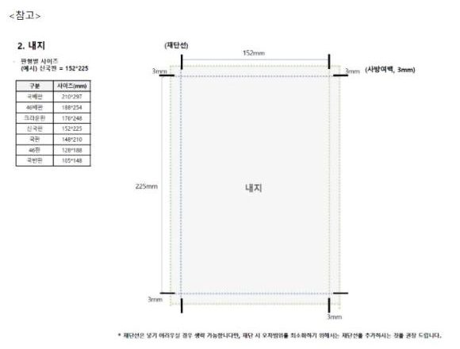
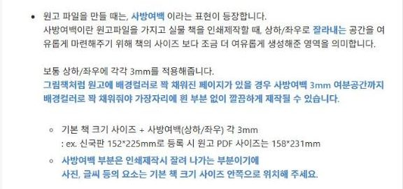
| 판형 예 | 판형 크기 | 만들 파일 크기 |
|---|---|---|
| 46판(부크크) | 127 × 188 | 133 × 194 |
| A5 | 148 × 210 | 154 × 216 |
| 신국판(교보) | 152 × 225 | 158 × 231 |
| 정사각판(교보) | 210 × 210 | 216 × 216 |
| 가로판(교보) | 254 × 188 | 260 × 194 |
글 여백은 교보문고가 상하좌우 30mm를 권하고, 좁게 만들더라도 최소 20mm까지입니다.
제본선: 책 가운데 쪽은 여백을 더 넓게
제본선은 쪽과 쪽이 묶이는 책 가운데 선입니다. 무선 제본은 가운데를 풀로 붙이기 때문에 책이 끝까지 펴지지 않고, 가운데 쪽 그림과 글이 안으로 말려 들어갑니다. 그래서 가운데 쪽 여백을 바깥쪽보다 넓게 잡습니다.
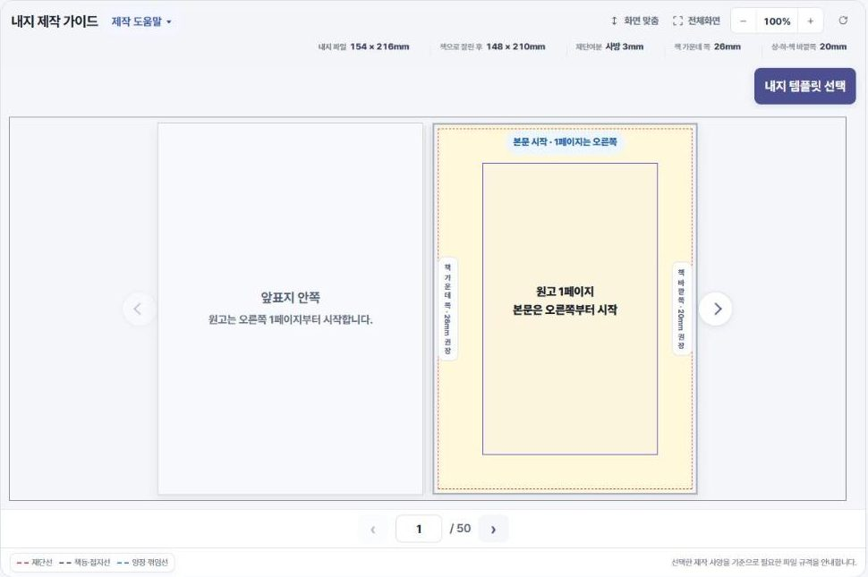
- 오른쪽 쪽(홀수)은 왼쪽이 제본선이고, 왼쪽 쪽(짝수)은 오른쪽이 제본선입니다. 쪽마다 넓은 여백의 방향이 반대입니다.
- 그림이 쪽에 꽉 차는 책은 그림을 제본선까지 채우되, 얼굴·손·글자 같은 중요한 것은 제본선에서 26mm 안쪽으로 둡니다.
- 두 쪽을 잇는 펼침 그림은 가운데가 말려 들어가므로, 주인공을 한쪽으로 몰아서 그립니다. 그림을 만들 때 지시문에 이 조건을 넣습니다.
- 표지에도 접히는 선이 있습니다. 책등과 앞·뒤표지가 만나는 선(접지선)에는 글자를 걸치지 않습니다.
해 보기 직접 따라 하는 구역
1AI에게 내지 PDF 점검시키기
내 원고 PDF를 넣고 【 】 안을 바꿔서 보냅니다.
너는 종이책(POD) 제작 검수자야. 첨부한 내 원고 PDF를 아래 기준으로 점검해 줘. [내 책 정보] - 낼 곳: 【부크크 / 교보문고 바로출판 / 두 곳 모두】 - 판형: 【예: A5 148×210mm】 - 제본과 날개: 【예: 무선, 날개 없음】 [점검 기준] 1. 내지 쪽수가 50쪽 이상이고 짝수인가 2. 판권 쪽이 원고 앞이나 뒤에 있는가 3. 쪽 크기가 판형보다 사방 3mm씩 큰가 (예: 148×210 → 154×216) 4. 쪽에 꽉 차는 그림이 바깥 3mm까지 채워져 있는가 5. 글이 가장자리에서 20mm 이상 안쪽에 있는가 6. PDF 1쪽을 오른쪽으로 보고 펼쳤을 때, 그림은 왼쪽(짝수 쪽)·글은 오른쪽(홀수 쪽)에 오는가 7. 두 쪽을 잇는 그림이 있으면, 가운데 접히는 곳(제본선)에 얼굴이나 글자가 걸리는가 8. 글과 얼굴이 책 가운데 쪽(제본선)에서 26mm 이상 떨어져 있는가 [출력] - 표: 기준 | 결과(맞음 · 안 맞음 · 확인 못 함) | 해당 쪽 번호 | 고칠 방법 - 그 아래에 가장 먼저 고칠 것 세 가지 [지킬 것] - PDF에서 확인할 수 없는 것은 "확인 못 함"이라고 적어. 짐작으로 "맞음"이라고 하지 마. - 쪽 번호는 PDF의 쪽 번호로 적어 줘. - 원고는 고치지 말고 점검만 해.
2크기는 내 눈으로 확인하기
- PDF를 연 프로그램의 「문서 속성」에서 쪽 크기(mm)를 직접 확인합니다. AI는 PDF의 실제 크기를 잘못 읽을 때가 있습니다.
- 양면 보기로 바꿔, PDF 1쪽이 오른쪽에 오고 그림이 왼쪽 쪽에 오는지 봅니다.
- 지금 전자책 PDF는 안 맞는 항목이 많은 게 당연합니다. 새로 만들 책이 지킬 규격을 아는 것이 목적입니다.
표지 · 판권 · 등록 규칙
내지 다음은 표지와 판권 쪽, 그리고 등록할 때의 규칙입니다. 여기까지 확인하고 판형 계획서를 올립니다.
알아보기 읽고 이해하는 구역
표지는 한 장으로 펼쳐서 만듭니다
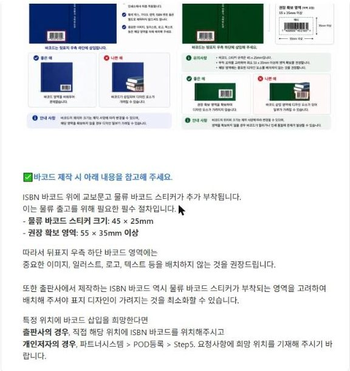
- 뒤표지 오른쪽 아래 55 × 35mm 이상은 중요한 그림과 글자를 비워 둡니다.
- 바코드를 다른 자리에 두고 싶은 개인 작가는 POD등록 Step5 요청사항에 원하는 자리를 적습니다.
- 부크크는 책날개 있음·없음을 고릅니다. 무료 표지는 책날개가 안 되고, A4는 책날개를 쓸 수 없습니다(화면 캡처는 STEP 5).
- 표지 크기와 책등 두께는 교보문고 제작 스튜디오에서 계산할 수 있습니다(이 화면의 「책등(세네카)」 카드).
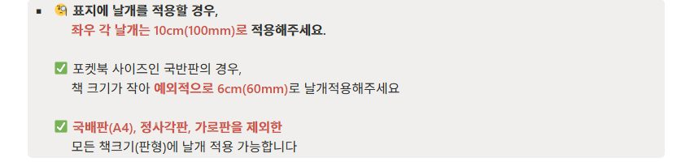
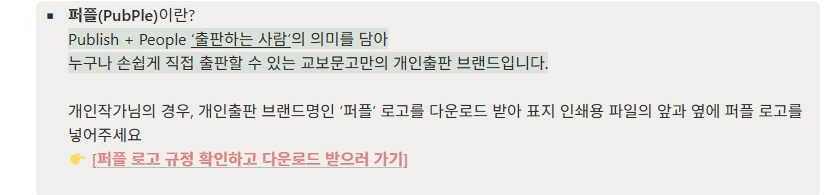
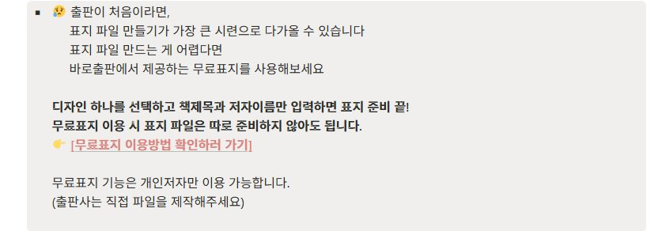
책등(세네카) 두께는 쪽수와 종이가 정합니다
책등은 책을 꽂았을 때 보이는 옆면입니다. 인쇄 현장에서는 세네카라고도 부릅니다. 표지 파일의 가로 길이에 책등 두께가 들어가므로, 표지는 내지 쪽수를 확정한 뒤에 만듭니다. 쪽수가 바뀌면 책등이 바뀌고 표지도 다시 만들어야 합니다.
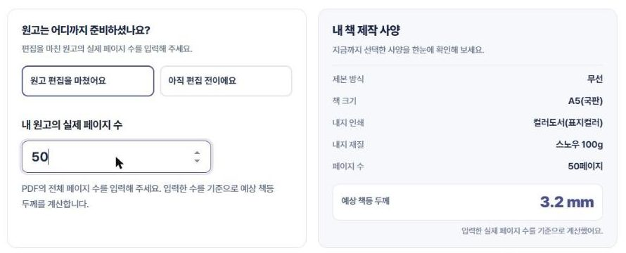
| 무엇 | 교보문고 제작 스튜디오의 계산 |
|---|---|
| 책등 두께 (무선·날개) | 내지 종이 한 장 두께 × 쪽수 ÷ 2 + 0.78mm (면지 0.28mm + 표지 0.5mm) |
| 책등 두께 (양장) | 위 값 + 6mm, 최소 11mm |
| 표지 파일 가로 (무선) | 판형 가로 × 2 + 책등 + 6mm |
| 표지 파일 가로 (날개) | 판형 가로 × 2 + 책등 + 날개 × 2 + 6mm |
| 표지 파일 세로 | 판형 세로 + 6mm |
예: A5(148 × 210), 무선, 스노우 100g, 50쪽 → 책등 3.2mm, 표지 파일 305.2 × 216mm
무선 제본일 때 종이와 쪽수에 따른 책등 두께(위 계산식으로 구한 값):
| 내지 종이 | 50쪽 | 60쪽 | 80쪽 | 100쪽 |
|---|---|---|---|---|
| 스노우 100g | 3.2mm | 3.7mm | 4.6mm | 5.6mm |
| 백색모조 80g | 3.0mm | 3.5mm | 4.4mm | 5.3mm |
| 백색모조 100g | 3.6mm | 4.2mm | 5.3mm | 6.5mm |
| 백색모조 150g | 5.0mm | 5.8mm | 7.5mm | 9.1mm |
| 미색모조 80g | 3.0mm | 3.5mm | 4.4mm | 5.3mm |
| 미색모조 100g | 3.6mm | 4.2mm | 5.3mm | 6.5mm |
| 이라이트 80g | 3.9mm | 4.5mm | 5.8mm | 7.0mm |
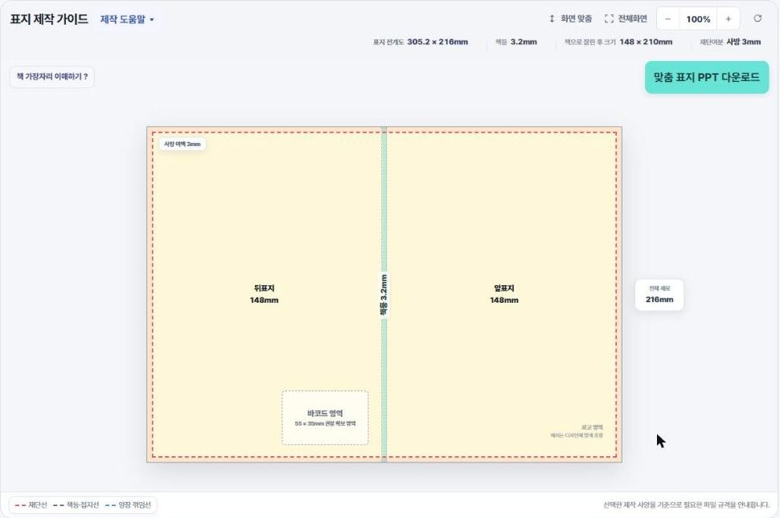
- 그림책 50쪽은 책등이 3~5mm로 얇습니다. 책등에 글자를 넣을지는 실제 두께를 보고 정합니다.
- 교보문고는 책등이 10mm 이하이면 책등의 퍼플 로고를 생략할 수 있습니다. 앞표지 로고는 그대로 넣습니다.
- 부크크는 책 만들기 화면에 쪽수를 넣으면 「두께」 칸에 책등 두께가 나옵니다(예: 46판, 미색모조 100g, 100쪽 → 7.1mm). 두 곳의 종이가 달라 두께도 다르므로, 표지는 낼 곳마다 따로 만듭니다.
판권 쪽은 두 곳 모두 꼭 넣습니다
판권 쪽(판권지)은 책 제목, 지은이, 펴낸 곳, 펴낸 날, ISBN, 저작권 표시를 적는 쪽입니다. 두 곳 모두 판권 쪽이 없으면 반려됩니다.
| 항목 | 부크크 | 교보문고 바로출판 |
|---|---|---|
| 꼭 넣어야 하나 | 넣어야 합니다. 판권지가 없거나 부크크에 등록한 정보와 다르면 책 등록 때 반려됩니다. | 넣어야 합니다. 판권 쪽은 필수이고, 빠지면 반려됩니다(반려 사유 2위). |
| 어디에 두나 | 부크크 원고 서식에는 2쪽에 들어 있습니다. | 원고 파일의 앞이나 뒤 |
| 무엇을 고치나 | 서식의 제목, 발행일, 저자, ⓒ 줄만 고칩니다. 펴낸이·펴낸곳(주식회사 부크크)·주소 등은 그대로 둡니다. ISBN 칸은 비워 둡니다. | 교보문고가 주는 예시에서 빨간색 부분만 내 책에 맞게 고칩니다. 개인 작가는 발행처가 퍼플입니다. |
| 맞춰야 할 것 | 판권지의 제목·저자가 표지, 등록 정보와 같아야 합니다. | 등록 화면에서 「원고에 판권 정보를 입력하셨나요?」를 묻습니다. |
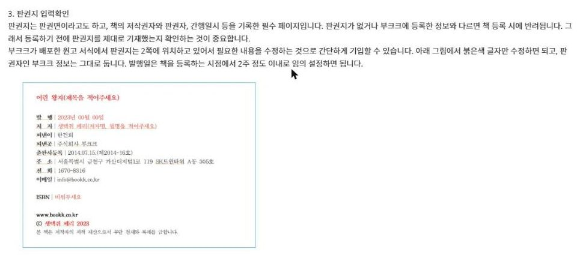
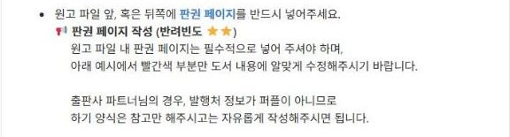
교보문고 등록 규칙 모음
| 항목 | 교보문고 바로출판 규칙 |
|---|---|
| 파일 형식 | PDF만, 200MB 이하. 한 쪽씩 만든 파일이어야 하고, 두 쪽을 한 장에 붙인 모아찍기는 안 됩니다. |
| 글꼴 | 글꼴을 PDF에 포함하거나 윤곽선으로 바꿉니다. |
| 색 | 흑백을 고르면 PDF도 흑백(그레이스케일)으로 만듭니다. 부분 컬러는 이어서 최대 10쪽까지이고 홀수 쪽에서 시작해 짝수 쪽에서 끝납니다. |
| 판권 쪽 | 원고 앞이나 뒤에 꼭 넣습니다. 빠지면 반려됩니다(반려 사유 2위). |
| 판형 | 등록한 판형과 PDF 크기가 다르면 반려됩니다(반려 사유 1위). |
| 면지 | 쪽수에 넣지 않습니다. 교보문고가 앞뒤에 한 장씩 붙여 줍니다. |
| 날개 | 좌우 각 100mm(A6은 60mm). A4·정사각판·가로판은 날개를 쓸 수 없습니다. |
| 무료 표지 | 개인 작가만 쓸 수 있고, 가로판·변형신국판·정사각판·양장에는 쓸 수 없습니다. |
| 퍼플 로고 | 개인 작가는 앞표지와 책등에 퍼플(PubPle) 로고를 넣어야 합니다. |
| 앞표지만 올리기 | 펼침면 표지를 만들기 어려우면 앞표지 PDF만 올려도 됩니다. 책등과 뒤표지는 흰 바탕으로 만들어집니다. |
| KC 마크 | 어린이 책에 KC 마크가 필요하면 작가가 직접 마크를 받아 표지에 넣습니다. 교보문고가 인증번호를 받아 주지는 않습니다. |
| AI 표시 | 원고나 표지에 AI를 일부라도 썼으면 「AI 생성·활용 도서」를 꼭 선택합니다. 표시하지 않아 독자 항의가 생기면 정산에서 차감될 수 있습니다. |
| 승인 뒤 | 쪽수·판형·종이·가격을 바꿀 수 없습니다. 원고 파일 교체는 승인일로부터 90일 안에 3번까지, 개정판은 6개월 뒤부터 낼 수 있습니다. |
| ISBN | 판매 승인 뒤 10영업일 안에 발급됩니다. |

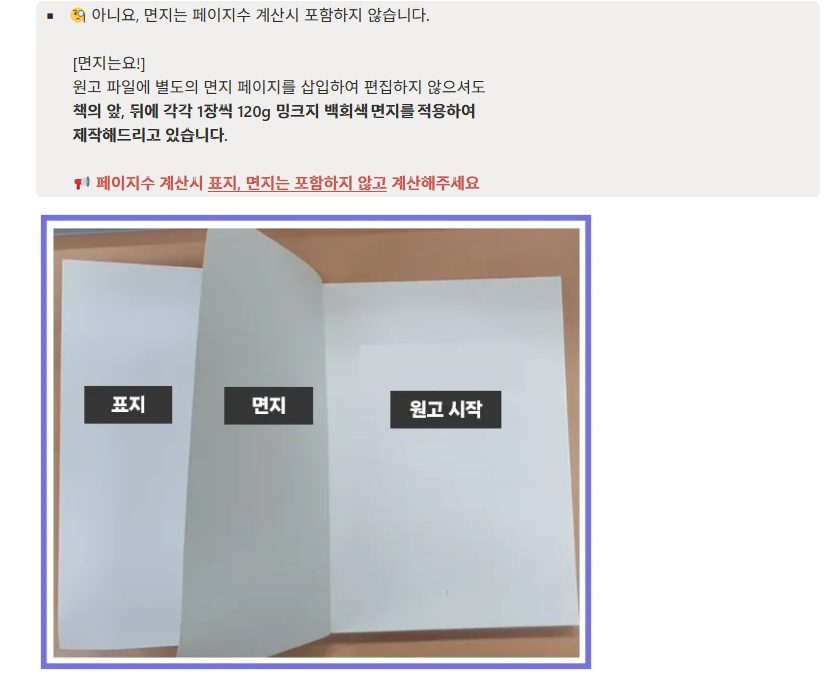
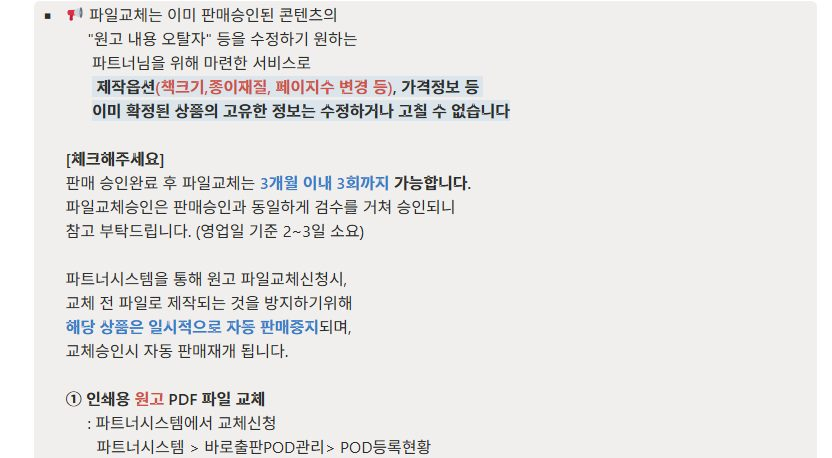
해 보기 직접 따라 하는 구역
1내 책 점검표
새로 만들 책이 지켜야 할 것들입니다. 계획서를 쓰기 전에 하나씩 읽고, 내 계획에서 빠진 것에 표시합니다.
- 내지가 50쪽 이상이고 짝수인가
- 판권 쪽이 있는가 (부크크는 서식의 2쪽, 교보문고는 원고 앞이나 뒤). 제목과 지은이가 표지와 같은가
- PDF 크기가 고른 판형 + 사방 3mm인가
- 쪽에 꽉 차는 그림이 바깥 3mm까지 채워져 있는가
- 얼굴과 글자가 재단선 안쪽에 있는가. 글은 가장자리에서 20mm 이상 떨어져 있는가
- PDF 1쪽이 오른쪽에 온다는 것을 생각하고 순서를 짰는가 (그림은 짝수 쪽, 글은 홀수 쪽)
- 얼굴과 글자가 책 가운데 쪽(제본선)에서 26mm 이상 떨어져 있는가
- 두 쪽을 잇는 그림의 가운데에 얼굴과 글자가 걸리지 않는가
- 표지는 내지 쪽수를 확정한 뒤, 계산된 책등 두께로 만들었는가
- 한 쪽씩 만든 PDF인가 (모아찍기가 아닌가)
- 뒤표지 오른쪽 아래 55×35mm가 비어 있는가
- 교보문고: 앞표지와 책등에 퍼플 로고를 넣었는가
- 교보문고: 「AI 생성·활용 도서」를 선택했는가
- 어린이 책이면 KC 마크가 필요한지 확인했는가
2AI에게 계획서 초안 받기
지금까지의 대화창에서 이어서 보냅니다. 초안은 내가 확인하고 고쳐서 올립니다.
지금까지 이 대화에서 나온 판정 결과, 판형 비교, 파일 점검 결과를 바탕으로 「POD 판형 계획서」 초안을 한 장으로 정리해 줘. [내가 정한 것] - 길: 【A 보강 / B 새로 만들기】 - 판형과 낼 곳: 【예: A5 148×210mm, 부크크와 교보문고】 - 제본과 날개: 【예: 무선, 날개 없음】 - 목표 내지 쪽수: 【예: 52쪽】 [계획서에 넣을 것] 1. 판형과 낼 곳, 고른 이유(비교한 후보 2개 포함) 2. 쪽수 계획: 앞부속 · 장면 수 · 펼침 그림 수 · 뒷부속 · 판권 쪽을 표로, 합계가 목표 쪽수와 맞는지 확인 3. 그림 계획: 새 그림 비율, 그대로 쓸 장면과 다시 그릴 장면, 장면별 뷰·샷·앵글 방향을 표로 4. 파일 규격: 만들 파일 크기(판형 + 사방 3mm), 제본선 쪽 여백, 예상 책등 두께는 "제작 화면에서 확인"이라고 적기 5. 점검에서 고칠 것 세 가지 [지킬 것] - 내가 정하지 않은 것은 네가 정하지 말고 "미정"이라고 적어. - 이 대화에 없는 숫자는 지어내지 마. - 쉬운 말로, 표를 중심으로.
3판형 계획서를 만들어 패들렛에 올리기
STEP 6에서 정한 판형과 STEP 7·8에서 확인한 규격를 한 장의 계획서로 묶습니다. 양식은 자유입니다.
| 넣을 것 | 내용 |
|---|---|
| 판형과 낼 곳 | 고른 판형과 크기(mm), 부크크·교보문고 가운데 낼 곳, 제본과 날개 |
| 고른 이유 | 비교한 후보 2개와, 이 판형을 고른 이유 |
| 쪽수 계획 | 목표 내지 쪽수와 구성(앞부속·장면 수·펼침 그림 수·뒷부속·판권 쪽) |
| 그림 계획 | 새 그림 비율, 그대로 쓸 장면과 다시 그릴 장면, 장면별 뷰·샷·앵글 방향 |
| 파일 규격 | 만들 파일 크기(판형 + 사방 3mm), 제본선 여백, 예상 책등 두께 |
| 점검에서 고칠 것 | 점검표에서 안 맞은 항목과 먼저 고칠 것 세 가지 |
게시물 제목: POD 판형 계획서
막힐 때 · 한 걸음 더
따라 하다 막히면 왼쪽을, 더 해 보고 싶으면 오른쪽을 봅니다.
알아보기 읽고 이해하는 구역
막힐 때
| 이럴 때 | 이렇게 말합니다 |
|---|---|
| 판정이 첫 줄에 안 나올 때 | "출력 순서를 지켜. 첫 줄에 판정부터 다시 적어 줘." |
| AI가 글을 고치기 시작할 때 | "오늘은 판정만 해. 고치지 말고 출력 1부터 다시 해 줘." |
| 표가 중간에 끊길 때 | "계속" |
| AI가 판형을 정해 버릴 때 | "판형은 내가 정해. 비교표만 다시 보여 줘." |
| AI가 말한 판형 크기가 내 조사표와 다를 때 | "판형 크기는 내 조사표가 기준이야. 조사표 숫자로 다시 계산해 줘." |
| 기획 자료를 못 찾겠을 때 | 최종 글과 PDF만 넣습니다. 이때 남은 재료는 "자료에 없음"으로 나옵니다. |
| 복사 버튼이 안 눌릴 때 | 프롬프트 상자 안을 마우스로 끌어 선택한 뒤 Ctrl+C로 복사합니다. |
교보문고 제작 스튜디오
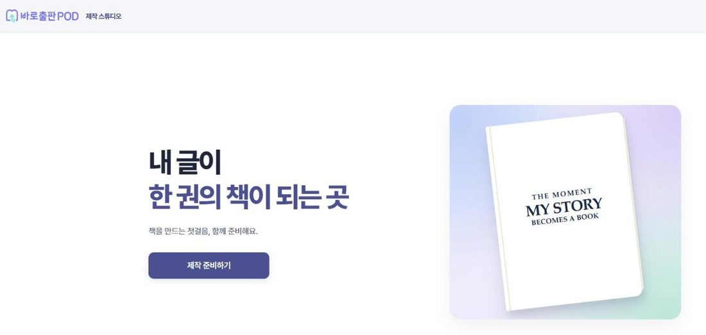
제본·판형·종이·쪽수를 고르면 책등 두께와 표지·내지 파일 크기를 계산해 주고, 표지용 PPTX와 내지 템플릿을 내려받을 수 있습니다.
해 보기 직접 따라 하는 구역
1쪽수 조건을 바꿔 한 번 더
판정 프롬프트의 【50】을 【30】으로 바꿔 한 번 더 돌립니다. 판정이 어떻게 달라지는지 비교합니다. 교보문고에서 30~49쪽으로 낼 때의 조건(STEP 4)을 감수할 만한지 생각해 봅니다.
2판정에 반대해 보기
방금 한 판정에 나는 반대해. 나는 【A 보강 / B 새로 만들기】가 맞다고 생각해. 1. 내 생각이 맞을 수 있는 근거를 내 자료에서 세 가지 찾아 줘. 2. 그쪽으로 갈 때 가장 좋은 방법을 세 줄로 말해 줘. 3. 그래도 처음 판정을 지키겠다면 이유를 한 줄로 말해 줘. 자료에 없는 것은 지어내지 마.
3판정 근거표에 내 기준 하나 더하기
판정 근거표의 여섯 기준에 내 책만의 기준을 하나 더해 다시 판정받습니다. 예: "읽어 줄 아이의 나이에 맞는 분량인지".
4제작 스튜디오에서 내 책 크기 뽑기
STEP 6에서 정한 판형과 목표 쪽수를 넣고, 내지 파일 크기와 책등 두께를 적어 둡니다. 그림을 다시 만들 때 이 숫자를 씁니다.